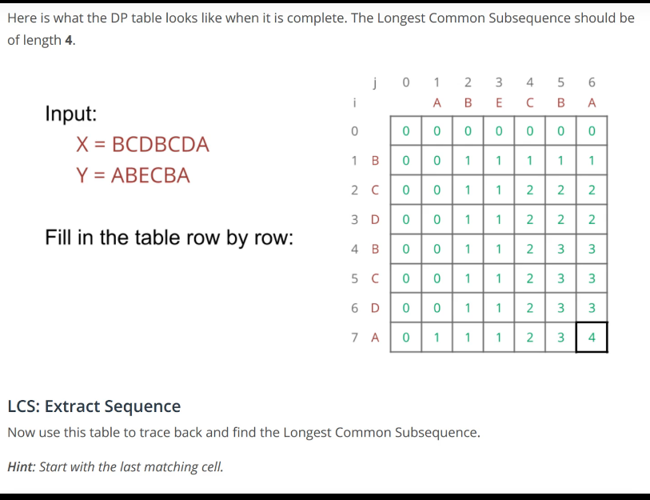
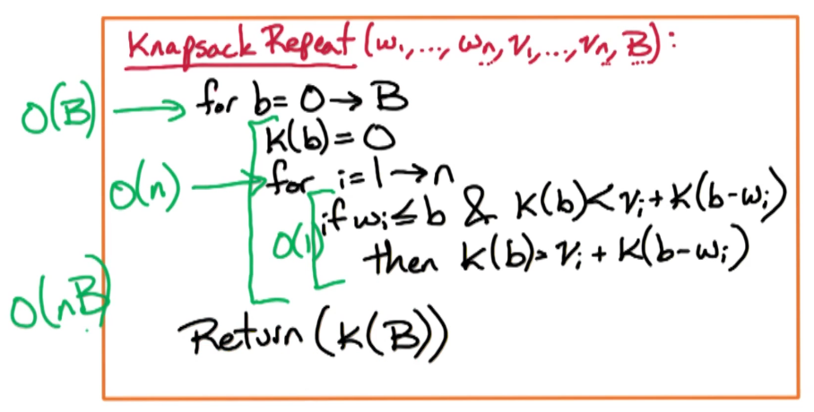
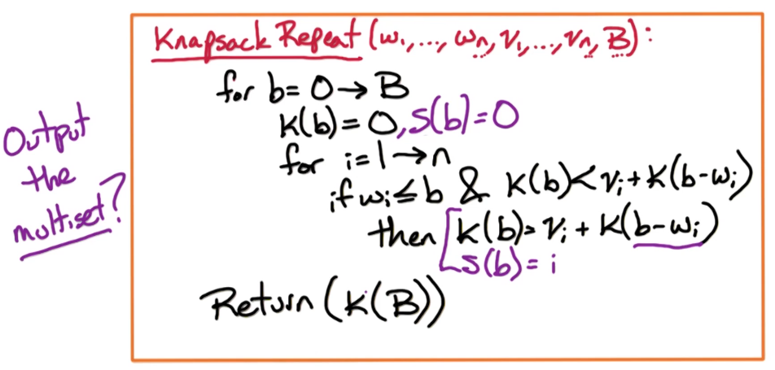
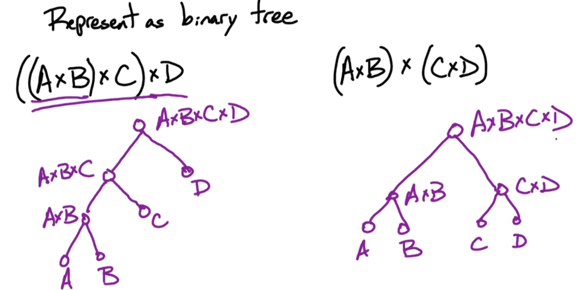
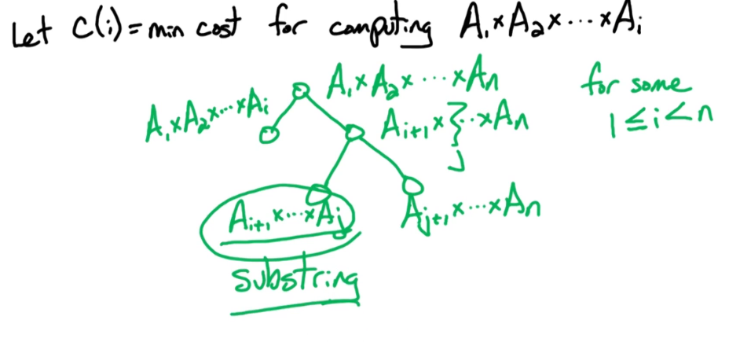
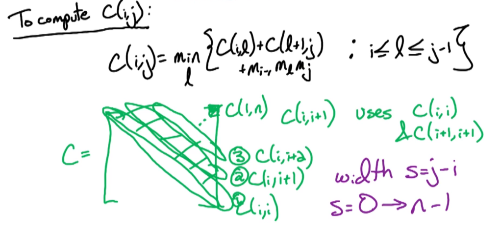

Week 1 — Intro & Dynamic Programming
2026-05-18 → 05-24 · Modules DP1 (FIB, LIS, LCS), DP2 (Knapsack, Chain Multiply)
Due this week
| Item | Type | Note |
|---|---|---|
| Readiness Check | self-assess | no due date — confirms prerequisites |
| Logistics quizzes | onboarding | communication, academic integrity |
| HW1 | written | DP problems |
| Quiz 1 | format | how DP answers are graded |
Watch the lecture (Intro & DP)
Learning objectives
- Convert an optimization problem into a bottom-up table with a clear subproblem, recurrence, fill order, and runtime.
- Distinguish a course-acceptable bottom-up DP answer from a recursion/memoization sketch.
- Recognize the state shape — one index, two indices, or capacity — and pick the matching recurrence pattern.
- Read the final answer out of the right table cell and state runtime as #entries × work-per-entry.
Core concepts
What dynamic programming is
Definition. DP solves a problem by combining answers to overlapping subproblems, each solved once and stored in a table. Intuition: recursion that would recompute the same calls is turned into a table you fill in a safe order.
- Works when the problem has optimal substructure (optimal answer built from optimal sub-answers) and overlapping subproblems (the same sub-answer is reused).
- Course style is bottom-up: define the table, fill smallest-to-largest, no recursion in the final write-up.
The 7-step DP template (apply to every DP answer)
- Subproblem in words — define exactly what one table entry means.
- Table entry + index ranges — name it (e.g. T(i), K(i, b)) and give the ranges.
- Base cases.
- Recurrence — and explain every branch of
the
min/max. - Fill order — the order that guarantees dependencies are ready.
- Where the answer lives — which cell holds the final result.
- Runtime = (number of entries) × (work per entry).
One-sequence DP
Fibonacci — warm-up for overlapping subproblems. Fi = Fi − 1 + Fi − 2, F0 = 0, F1 = 1. Fill i = 2 → n; answer Fn; runtime O(n).
Longest Increasing Subsequence (LIS). Subproblem L(i) = length of the longest increasing subsequence ending at index i. L(i) = 1 + max ({ 0 } ∪ { L(j) : j < i, aj < ai }).
- Base: every L(i) ≥ 1 (the element itself).
- Fill i = 1 → n; answer = maxiL(i) (not L(n) — the LIS can end anywhere).
- Runtime O(n2): n entries, O(n) scan each.
Two-sequence DP
Longest Common Subsequence (LCS). Subproblem L(i, j) on prefixes x1..i, y1..j. $$ L(i,j)= \begin{cases} 0 & i=0 \text{ or } j=0,\\ L(i-1,j-1)+1 & x_i = y_j,\\ \max\{L(i-1,j),\,L(i,j-1)\} & \text{otherwise.} \end{cases} $$
- Fill row-by-row (each cell needs up, left, up-left). Answer L(n, m); runtime O(nm).
Capacity DP
0/1 Knapsack. Subproblem K(i, b) = max value using items ≤ i within capacity b. K(i, b) = max { K(i − 1, b), vi + K(i − 1, b − wi) } (second option only if wi ≤ b).
- Two choices: skip item i (row i − 1, same b) or take it (row i − 1, reduced capacity).
- Base K(0, b) = 0. Answer K(n, B); runtime O(nB) — pseudo-polynomial (B is a value, not input bits).
Knapsack with repetition — items reusable. The "take" branch stays on the same row: K(i, b) = max { K(i − 1, b), vi + K(i, b − wi) }.
The single change — K(i, ⋅) instead of K(i − 1, ⋅) in the take branch — is the entire difference between 0/1 and unbounded knapsack. Know which one a problem wants.
Interval DP
Chain Matrix Multiply. Subproblem C(i, j) = min scalar multiplications to compute Ai⋯Aj (dimensions mi − 1 × mi). C(i, j) = mini ≤ k < j [ C(i, k) + C(k + 1, j) + mi − 1 mk mj ], C(i, i) = 0.
- Fill by increasing interval length j − i. Answer C(1, n); runtime O(n3) (O(n2) entries × O(n) split choices).
Algorithms — summary
| Problem | Subproblem | Recurrence kernel | Entries × work | Runtime |
|---|---|---|---|---|
| Fibonacci | Fi | Fi − 1 + Fi − 2 | n × O(1) | O(n) |
| LIS | L(i) end at i | 1 + max L(j) | n × O(n) | O(n2) |
| LCS | L(i, j) | match / drop | nm × O(1) | O(nm) |
| 0/1 Knapsack | K(i, b) | take / skip | nB × O(1) | O(nB) |
| Chain Multiply | C(i, j) | best split k | n2 × O(n) | O(n3) |
Worked example — LCS of
X = ABCB, Y = BDCAB
Fill L(i, j) (rows = X, cols = Y). Diagonal +1 on a match, else max(up, left):
| ∅ | B | D | C | A | B | |
|---|---|---|---|---|---|---|
| ∅ | 0 | 0 | 0 | 0 | 0 | 0 |
| A | 0 | 0 | 0 | 0 | 1 | 1 |
| B | 0 | 1 | 1 | 1 | 1 | 2 |
| C | 0 | 1 | 1 | 2 | 2 | 2 |
| B | 0 | 1 | 1 | 2 | 2 | 3 |
Answer L(4, 5) = 3 (one LCS is
BCB).
Common pitfalls / exam traps
- LIS answer is maxiL(i), not L(n) — a frequent mistake.
- Writing a recursive/memoized function instead of a bottom-up table loses credit in this course.
- Mixing 0/1 and repetition knapsack recurrences (the i vs i − 1 in the take branch).
- Forgetting capacity guard wi ≤ b on the take branch.
- Reporting runtime without the #entries × work justification.
How to answer (HW / exam)
Give the bottom-up recurrence + table, not a recursive/memoized function. Always finish with the runtime as #entries × work-per-entry. See DP guidance and DP recurrence relations.
Go deeper — readings · guidance · notes
Comprehensive Notes
Full lecture notes for this week's modules, figures inline. The summary above is the quick-reference; this is the deep read.
DP1 — Dynamic Programming (FIB, LIS, LCS)
Definition. Dynamic programming combines solutions of subproblems to solve a larger problem efficiently — typically for optimization problems that have many feasible outcomes but one optimal value.
General design methodology:
- Characterize the structure of an optimal solution.
- Define the value of the optimal solution in recursive terms.
- Compute the value of an optimal solution (typically bottom-up).
- (optional) Reconstruct an optimal solution from the computed table.
Class methodology (what graders expect):
- First — define the subproblem in words. Almost every DP problem is an array of 1+ dimensions; say in English what each entry means (e.g. "T(i, j) is the min sum of values up to index i, j"). Consider constraints/boundaries (there almost always is one).
- Second — write the recurrence in terms of
subproblems, including base cases (often T(0) or T(i, 0)). The base case
cannot be part of the recurrence; if T(0) is the base, the recurrence
starts at 1. You may need a
max/minor a piecewise function. - Third — pseudocode (math + programming; if it would compile cleanly it's probably too code-like).
- Fourth — runtime in Big-O.
Good subproblems on a sequence X of length n: prefixes x[ : i], suffixes x[i : ], substrings x[i : j] (first two linear, last polynomial).
Fibonacci — why DP
Recursive definition Fn = Fn − 1 + Fn − 2, F0 = 0, F1 = 1. The naive recursive algorithm recomputes the same calls:
Fib1(n):
if n = 0 return 0
if n = 1 return 1
return Fib1(n-1) + Fib1(n-2)Runtime T(n) ≤ O(1) + T(n − 1) + T(n − 2). Since $F_n \approx \phi^n/\sqrt{5}$ (ϕ ≈ 1.618), this is exponential — each branch recomputes shared values (e.g. both Fib1(n − 1) and Fib1(n − 2) need Fib1(n − 3)). Fill a table instead:
Fib2(n):
F[0]=0; F[1]=1
for i = 2 to n: F[i] = F[i-1] + F[i-2]
return F[n]Runtime O(n).
Key idea. A DP solution uses no recursion and no memoization/hashtables — you fill a table bottom-up.
LIS — Longest Increasing Subsequence
Goal: the length of the longest increasing subsequence of a1, …, an (not the subsequence itself). A substring is consecutive elements; a subsequence is any in-order subset (skipping allowed).
- Subproblem: L(i) = length of the LIS ending at index i.
Key idea. It's the last element that matters — the LIS ending at i extends the best earlier LIS whose final value is smaller than ai.
L(i) = 1 + maxj{ L(j) : aj < ai, j < i } (max of ⌀ = 0).
LIS(a):
for i = 1 to n:
L(i) = 1
for j = 1 to i-1:
if a_j < a_i and L(i) < 1 + L(j):
L(i) = 1 + L(j)
return max(L(:)) # NOT L(n)Runtime O(n2) + O(n) = O(n2).
LCS — Longest Common Subsequence
Input two strings X = x1⋯xn, Y = y1⋯ym; goal is the length of the longest string that is a subsequence of both. First instinct is a single index L(i) on equal-length prefixes, but that fails: when the last characters xi ≠ yj the LCS may drop xi or yj, leaving prefixes of different lengths — which a one-parameter table cannot express.
Fix: two parameters. L(i, j) = length of the LCS of X[1..i] and Y[1..j].
$$ L(i,j)= \begin{cases} 0 & i=0 \text{ or } j=0,\\ 1 + L(i-1,j-1) & x_i = y_j,\\ \max\{\,L(i-1,j),\ L(i,j-1)\,\} & x_i \ne y_j. \end{cases} $$
- Equal case: the LCS must end in that common character (else append it for a longer one) — so +1 and recurse on L(i − 1, j − 1).
- Unequal case: the LCS drops xi or yj (or both) — take the better of L(i − 1, j) and L(i, j − 1).
LCS(X,Y):
for i = 0 to n: L(i,0) = 0
for j = 0 to m: L(0,j) = 0
for i = 1 to n:
for j = 1 to m:
if X[i] = Y[j]: L(i,j) = 1 + L(i-1,j-1)
else: L(i,j) = max{ L(i,j-1), L(i-1,j) }
return L(n,m)L is a table (not a vector like the earlier problems); runtime O(nm).

Contiguous subsequence (DPV 6.1)
Max-sum contiguous subsequence. Subproblem T(i) = max sum of a contiguous subsequence ending at i. Working small cases by hand shows a negative last element should not be ended on — zero it out:
T(0) = 0, T(i) = ai + max { T(i − 1), 0 } (1 ≤ i ≤ n).
Answer maxiT(i), runtime O(n). Trace on 5, 15, −30, 10, −5, 40, 10 ⇒ 5, 20, −10, 10, 5, 45, 55.
Coin game (substring DP)
A row of coins v0, …, vn − 1; two players alternately take the left-most or right-most coin; maximize your total. Neither prefixes nor suffixes work (either side is takeable), so use a substring with a player index. X(i, j, p) = max value player p gets from coins vi, …, vj:
X(i, j, me) = max { X(i + 1, j, you) + vi, X(i, j − 1, you) + vj }, X(i, j, you) = min { X(i + 1, j, me), X(i, j − 1, me) }.
(The opponent minimizes your score; you don't gain vi/vj on their move.) Topological order: increasing j − i. Base X(i, i, me) = vi, X(i, i, you) = 0. Answer X(0, n, me), runtime O(n2).
DP2 — Knapsack & Chain Multiply
Edit distance (bonus)
Cheapest sequence of Insert / Delete / Replace turning x → y (cost 1 each). With E(i, j) over prefixes:
E(i, j) = min { replace + E(i − 1, j − 1), insert + E(i, j − 1), delete + E(i − 1, j) }.
Base E(i, 0) = i, E(0, j) = j; runtime O(nm).
Knapsack
Input: n objects with integer weights w1, …, wn and values v1, …, vn, capacity B. Find S with ∑i ∈ Swi ≤ B maximizing ∑i ∈ Svi. Two variants: V1 one copy of each object; V2 unlimited supply.
Watch out — greedy fails. Sorting by value-per-weight ri = vi/wi and taking greedily is suboptimal for knapsack.
Example (capacity 22):
objects 1 2 3 4
values 15 10 8 1
weights 15 12 10 5Greedy takes object 1 (weight 15), can't fit 2 or 3, adds 4 → value 15 + 1 = 16. Optimal is objects {2, 3}: weight 12 + 10 = 22, value 10 + 8 = 18.
V1 (0/1). A one-parameter K(i) fails — reaching the optimum at i = 3 requires having taken a suboptimal set at i = 2 (take object 2, not 1, to leave capacity for 3). Fix: add capacity to the state. K(i, b) = max value using a subset of objects 1..i with total weight ≤ b:
$$ K(i,b)= \begin{cases} \max\{\,v_i + K(i{-}1,\,b-w_i),\ \ K(i{-}1,b)\,\} & w_i \le b,\\ K(i{-}1,b) & w_i > b. \end{cases} $$
Base K(0, b) = 0, K(i, 0) = 0. Answer K(n, B), runtime O(nB).
Watch out — pseudo-polynomial. O(nB) is not polynomial in the input: B is a single number taking log B bits, so doubling B from 16 to 32 adds only one input bit but doubles the work.
V2 (unlimited / multiset). Either add no more copies of i (→ K(i − 1, b)) or add another copy of i (→ vi + K(i, b − wi), note the same row i):
K(i, b) = max { K(i − 1, b), vi + K(i, b − wi) } (second term if wi ≤ b).
This is valid because K(i, b − wi) is a previous column in the same row. It collapses to a one-parameter form:
K(b) = maxi{ vi + K(b − wi) : 1 ≤ i ≤ n, wi ≤ b }.


Electoral College (knapsack-style)
Pick states with smallest total population giving ≥ Z electoral votes. T(i, z) = min population to reach ≥ z votes using states 1..i. Base T(0, z) = ∞ (no states ⇒ can't reach Z).
$$ T(i,z)= \begin{cases} \min\{\,T(i{-}1,z),\ \ p_i + T(i{-}1,\,z-v_i)\,\} & v_i < z,\\ \min\{\,p_i,\ \ T(i{-}1,z)\,\} & v_i \ge z. \end{cases} $$
Answer T(n, Z), runtime O(nZ).
Chain Matrix Multiply
Compute A1 × ⋯ × An (Ai is mi − 1 × mi) with the fewest scalar multiplications. Multiplication is associative, so parenthesization is free to choose but changes cost: multiplying a a × b by a b × c matrix costs acb. Represent a parenthesization as a binary tree:


Substring subproblem: C(i, j) = min cost to compute Ai⋯Aj. Split at l into Ai⋯Al and Al + 1⋯Aj, merge cost mi − 1mlmj:
C(i, i) = 0, C(i, j) = min i ≤ l ≤ j − 1[ C(i, l) + C(l + 1, j) + mi − 1 ml mj ].
Fill by increasing interval length s = j − i: first the diagonal C(i, i), then C(i, i + 1), etc., up to C(1, n).

ChainMultiply(m0,...,mn):
for i = 1 to n: C(i,i) = 0
for s = 1 to n-1:
for i = 1 to n-s:
j = i + s
C(i,j) = infinity
for l = i to j-1:
curr = m[i-1]*m[l]*m[j] + C(i,l) + C(l+1,j)
if C(i,j) > curr: C(i,j) = curr
return C(1,n)Runtime O(n3) (O(n2) entries × O(n) split choices).
DPV chapter exercises
DPV chapter exercises (exact, from the textbook)
Exact end-of-chapter exercises, parsed from the DPV chapter PDFs.
DPV Ch 6 — Dynamic Programming — open exercises · chapter PDF
DPV Ch 0 — Prologue — open exercises · chapter PDF
Agent hint
DP question → apply the 7-step template; pick the recurrence pattern by state shape (1-index / 2-index / capacity / interval); verify it's bottom-up; end with runtime = #entries × work. Pull exact grading expectations from the DP guidance docs.